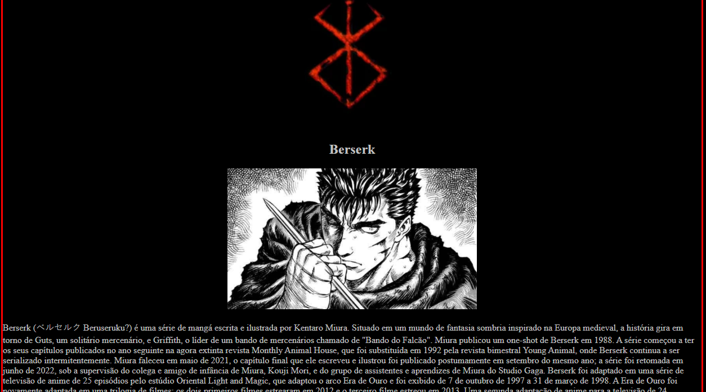

SOBRE MIM
Olá pessoal! Meu Nome é Juan Hangel, tenho 18 anos e atualmente estou cursando Programação. recém formado do ensino médio, tive uma breve experiência na Programação comecei a estudar sobre programar no ano passado e desde então fui me aprofundando nesta jornada tecnológica.
MEUS OBJETIVOS
Meu objetivo é de mostrar um bom intersse sobre tecnologia, que deseja buscar conhecimento e aprender com erros e acertos. Continuar na área de T.I buscando aperfeiçoamento, busco realizar em me formar em progrmação e construir um projeto pessoal que planejo com amigos para realizar futuramente com base nesta especialização em desenvolvimento web.
PROJETOS
Sobre projetos, tenho projetos interessantes como este que é de criar um portifólio, mas tenho dois projetos especificos que fiz durante meu curso. Fiz com base no meu conhecimento e aprendizado na aula do estilo CSS onde eu estudo. Busquei conteúdos na internet mostrando como funciona e apliquei no que entendi.
este é o primeiro projeto onde apliquei um estilo de css básico com outros sites linkados. Um site sobre animes especificos.
HABILIDADES E COMPETÊNCIAS
Consegui desenvolver um básico intelecto na digitação fazendo Programação, tenho algumas dificuldades de decorar cada tecla, mas estou muito melhor do que antes. entendi o conceito do HTML,GIT e CSS, os conceitos básicos de cada um deles, compreendi como funciona as divs de cada estrutura no HTML, estou desenvolvendo projetos fora do curso em que estou estudando e aplicando o que aprendi.